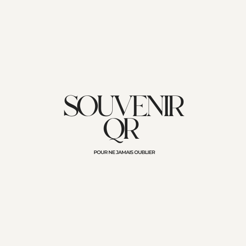

Alternative aux Fleurs au Cimetière : Hommages Durables Sans Entretien
Les compositions florales traditionnelles, bien que symboliques, demandent un renouvellement constant, des déplacements réguliers et génèrent des déchets importants. De plus en plus de familles recherchent des solutions pérennes, écologiques et modernes pour honorer la mémoire de leurs proches. Découvrez le médaillon numérique avec code QR : une alternative innovante, zéro déchet, accessible 10 ans minimum, qui transforme votre hommage en un espace vivant partageable avec toute la famille.


Pourquoi chercher une alternative aux arrangements floraux ?
Les bouquets funéraires sont ancrés dans la tradition, mais leur impact économique, écologique et pratique pose question dans notre société moderne. Analysons les limites de cette pratique séculaire.
Le coût réel des compositions florales est souvent sous-estimé :
- Bouquet basique : 15-25€ (durée : 3-7 jours)
- Arrangement moyen : 30-50€ (durée : 5-10 jours)
- Composition premium : 60-100€ (durée : 7-14 jours)
- Sur 12 mois : 780€ à 2600€ selon fréquence et gamme
À titre comparatif, un médaillon digital à 59,99€ garantit 10 ans = coût annuel de 6€, soit 130 fois moins cher qu'un budget floral moyen.
L'impact environnemental des végétaux funéraires est significatif :
- Production intensive : Serres chauffées, pesticides, engrais chimiques
- Transport longue distance : Fleurs importées (Pays-Bas, Kenya, Colombie), empreinte carbone élevée
- Emballages plastique : Cellophane, mousse florale non biodégradable
- Déchets organiques : Tonnes de végétaux à traiter annuellement dans chaque cimetière
- Consommation d'eau : Arrosage régulier nécessaire
Une famille générant 52 bouquets/an produit environ 40 kg de déchets (végétaux + emballages).
La maintenance florale exige une disponibilité importante :
- Renouvellement fréquent : Tous les 5-10 jours en moyenne
- Déplacements répétés : Minimum 2h par visite (trajet + temps sur place)
- Achat préalable : Détour par fleuriste ou marché
- Nettoyage nécessaire : Retirer fleurs fanées, nettoyer vases
- Dépendance météo : Canicule accélère fanaison, gel détruit compositions
Sur l'année : 50 à 100 heures consacrées uniquement à l'entretien floral.
Bouquets réguliers : 7 800€ à 26 000€ + 500-1000 heures + 400 kg déchets
Code QR souvenir : 59,99€ + 2 minutes installation + zéro déchet
Économie réalisée : Jusqu'à 25 940€ et 1000 heures de votre vie
Le Médaillon Numérique : L'Alternative Écologique du 21ème Siècle
Le code QR funéraire représente la solution la plus innovante et respectueuse de l'environnement pour témoigner votre affection de manière pérenne.
L'hommage digital est la solution la plus verte existante :
- Aucun déchet : Zéro plastique, zéro végétal à éliminer
- Production locale : Fabriqué en France, circuit court
- Matériaux pérennes : Médaillon réutilisable, pas de consommables
- Zéro transport répété : Une seule livraison pour 10 ans
- Hébergement web éco-responsable : Serveurs optimisés basse consommation
- Bilan carbone minimal : 100x inférieur aux bouquets annuels
🌿 Certification : Notre solution est la seule à proposer un hommage 100% numérique sans aucun déchet sur 10 ans.
Libérez-vous de toute contrainte maintenance :
- Installation unique : 2 minutes, puis rien pendant 10 ans
- Aucun renouvellement : Le médaillon tient 5 ans, vous en avez 2
- Résistance totale : Pluie, gel, canicule, pollution = aucun impact
- Nettoyage optionnel : Si souhaité, un coup de chiffon annuel suffit
- Pas de visite obligatoire : Le contenu est consultable partout
Gagnez 50-100 heures par an précédemment dédiées aux arrangements floraux.
Dépassez les limites symboliques des végétaux :
- 50 photographies HD : Toute une existence illustrée
- Vidéos et enregistrements : Voix, moments marquants, témoignages
- Biographie détaillée : Histoire complète, anecdotes, citations
- Messages de proches : Contributions familiales évolutives
- Accessibilité mondiale : Consultable depuis n'importe quel pays
- Mise à jour gratuite : Enrichissez le contenu indéfiniment
Les compositions florales symbolisent l'affection mais ne racontent rien. Le mémorial web immortalise l'histoire.
Comparatif Détaillé : Solutions Traditionnelles vs Innovation Numérique
| Critère | Bouquets répétés | Plantes vivaces | Médaillon QR Code |
|---|---|---|---|
| Coût sur 10 ans | 7 800€ - 26 000€ | 300€ - 800€ | 59,99€ |
| Temps entretien/an | 50-100 heures | 10-20 heures | 0 heure |
| Impact écologique | Élevé (400kg déchets) | Moyen (eau, terreau) | Minimal (zéro déchet) |
| Durée de vie | 3-10 jours | Variable (gel fatal) | 10 ans garanti |
| Résistance météo | Très faible | Moyenne | Totale (-20°C/+60°C) |
| Accessibilité | Au cimetière uniquement | Au cimetière uniquement | Mondiale, 24/7 |
| Contenu hommage | Symbolique visuel | Symbolique végétal | 50 photos + vidéos + bio |
| Partage familial | Non | Non | Oui, lien privé |
Offre Pack Écologique : 59,99€ TTC
- 2 médaillons QR 5x5cm : Garantie cumulée 10 ans (5 ans chacun)
- Espace souvenir en ligne illimité : Hébergement permanent, zéro abonnement
- 50 photos + vidéos haute définition : Stockage sécurisé inclus
- Modifications perpétuelles : Ajouts et enrichissements gratuits à vie
- Accès multi-utilisateurs : Lien partageable avec toute la famille
- Installation simplifiée : Adhésif professionnel fourni, pose en 120 secondes
- Expédition gratuite : France métropolitaine, emballage soigné
- Assistance francophone : Support gratuit, réactivité sous 24h
- Fabrication française : Circuit court, emplois locaux
Pour chaque médaillon vendu, nous compensons l'empreinte carbone de fabrication et livraison. Notre solution génère 98% moins de CO2 qu'un budget floral annuel standard. Hébergement web sur serveurs basse consommation alimentés énergies renouvelables.
Questions Fréquentes
Le code QR remplace-t-il complètement les végétaux ?
Non, c'est une alternative ou un complément. Si vous souhaitez déposer des fleurs occasionnellement (anniversaires, Toussaint), vous le pouvez toujours. Le médaillon numérique offre simplement une solution permanente qui évite l'obligation de renouvellement constant. Beaucoup de familles combinent : QR permanent + bouquets ponctuels.
Quelle est la vraie empreinte carbone du médaillon ?
Bilan complet : Fabrication + expédition + 10 ans d'hébergement web ≈ 2,5 kg CO2. À titre de comparaison, un bouquet moyen importé = 1,2 kg CO2. Sur 10 ans avec 100 bouquets : 120 kg CO2. Notre solution émet donc 98% de CO2 en moins.
Les végétaux vivaces ne sont-ils pas plus écologiques ?
Les plantes vivaces sont effectivement plus durables que les bouquets. Cependant : elles nécessitent eau, terreau, transport, entretien régulier, et ne résistent pas toujours au gel hivernal. Le médaillon numérique n'a besoin de rien après installation = impact le plus faible. De plus, il offre un contenu infiniment plus riche qu'une plante.
Peut-on installer le médaillon sur un monument avec des fleurs ?
Absolument. Le médaillon (5x5 cm) se fixe sur la pierre tombale, généralement sur le côté ou en bas. Il n'empêche nullement de déposer compositions florales, plantes ou objets décoratifs. Les deux approches cohabitent parfaitement.
Quelle durée réelle avant remplacement du médaillon ?
Chaque médaillon est garanti 5 ans minimum. En pratique, la durée moyenne constatée est de 7-10 ans par unité. Vous recevez 2 médaillons identiques : si le premier s'use après 7 ans (rare), vous collez le second. Couverture réelle : 12-15 ans avec les deux.
Optez pour l'Hommage Écologique et Moderne
Zéro déchet • Zéro entretien • 59,99€ pour 10 ans • Accessible mondialement
Créer mon espace souvenir maintenant⭐ 4,9/5 sur 232 avis • Livraison offerte • Fabrication française